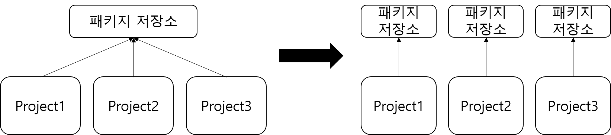
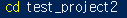
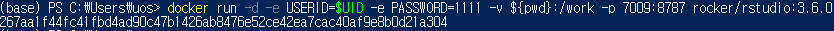
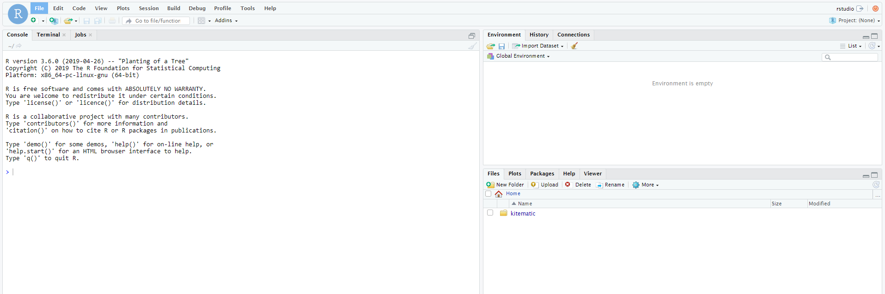
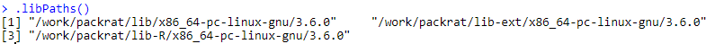
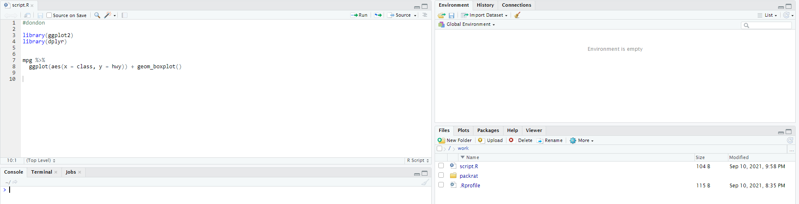
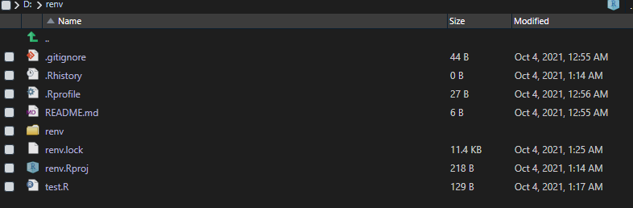

setwd('/work')데이터과학 전 분야에서 reproducible research가 중요해지고 있다. reproducible research를 위해서는 어떤 개발환경에서든 원 개발 버전과 동일한 환경을 보존해야하는데, 이 때 장애물이 되는 것이 운영체제, r 버전, r 패키지 버전 별로 동일한 환경을 구축하는 일이다. reproducible research를 쉽게 할 수 있게 해주는 대표적인 패키지인 renv, packrat에 대해 알아보자.
packrat 소개

packrat은 프로젝트 별로 독립된 환경을 구축해주는 패키지이다. 보통 Rstudio에서 프로젝트를 관리할 때 모든 프로젝트는 현재 설치된 R 최신 버전에 맞는 하나의 패키지 소스에서 불러온다(패키지 설치 경로는 .libs로 확인할 수 있다). R 최신 버전을 사용할 때는 문제가 없지만 R 이전 버전 혹은 패키지 이전 버전을 사용해야할 경우 R을 버전에 맞게 재설치해주어야하고 패키지도 버전을 낮춰서 재설치해주어야 하기 때문에 매우 번거롭다. 또 패키지 버전을 낮추게 되면 패키지 끼리 충돌이 일어날 수 있고, 다른 프로젝트에서 분석을 진행할 때 영향을 미치기 때문에 다시 버전 업을 해줘야 한다.
docker 소개
docker 설치 방법 및 구동 방법은 https://www.youtube.com/watch?v=VVxvL4xRPjU 에 잘 정리되어있다.
R은 도커 허브에 rocker라는 이름으로 등록된 많은 image 파일이 있다. 필요한 상황에 맞는 image를 찾아서 다운을 받으면 된다.
rocker image 설치 방법
window powershell을 키고 아래 문법을 입력하면 설치가 된다.
$ docker pull rocker/rstudio:3.6.0
컴퓨터에 설치된 docker image 목록을 확인할 수 있다.
$ docker image list
rocekr image 실행 방법
프로젝트 파일을 생성한다.
r server에서 실행 후 저장한 R script, csv 등의 모든 파일을 local 컴퓨터에 저장하는 폴더를 만드는 것이다.

아래 코드를 실행하면 다운받은 image가 실행된다.
$ docker run -d -e USERID=$UID -e PASSWORD=1111 -v ${pwd}:/work -p 7009:8787 rocker/rstudio:3.6.0

| 옵션 | 설명 |
|---|---|
| -d | detach mode(백그라운드 모드) |
| -p | 호스트와 컨테이너의 포트를 연결 |
| -e | 컨테이너 내에서 사용할 환경변수 설정 |
| -v | 호스트와 컨테이너의 디렉토리를 연결 |
구글 크롬에 접속해서 localhost:7009를 주소창에 입력한다.
아이디 : rstudio
비밀번호 : -e PASSWORD에 입력한 1111
아래와 같은 rstudio 창이 나오면 완료

packrat 사용법
rstudio 서버에서 아래 코드를 순차적으로 실행한다.
먼저 docker run에서 마운드한 위치는 /work이므로 setwd로 위치를 변경해준다.
새로운 프로젝트를 생성하는 것이므로 R script, csv 데이터 등을 저장할 새 디렉토리를 생성한다. packrat::init을 실행하게 되면 일반 프로젝트에서 packrat 프로젝트로 전환된다. 즉. 자체 개인 패키지 라이브러리가 있는 프로젝트로 전환되며, 설치된 패키지는 해당 프로젝트에서만 사용할 수 있다.
install.packages("packrat")
packrat::init("/work")
.libPaths()
packrat::on("/work")
.libPaths()
packrat::on으로 packrat 모드를 키게 되면 work 디렉토리에 packrat 폴더로 패키지 저장 위치가 업데이트된다.
install.packages("tidyverse")
패키지 snapshot을 보면 R 3.6 기준 2019-07-05에 업데이트된 tidyverse 패키지를 설치한다. 패키지 설치는 local에 설치하는 속도보다 몇 배 이상 오래걸릴 수 있다.
R script를 새로 생성하고 적당한 예제 코드를 작성 후에 저장을 하게되면 work 디렉토리에 R script 파일이 저장되는 것을 볼 수 있다. server 상에서 저장한 이 파일은 local 컴퓨터에 생성했던 프로젝트 파일 test_project2에도 동일하게 저장된다.

packrat::snapshot()packrat::snapshot()을 이용하면 라이브러리의 현재 상태(현재 설치된 패키지 버전)를 저장할 수 있다.
이것도 저장하는 속도가 생각보다 많이 느리다. 한번 저장해놓으면 계속 쓸 수 있지만 속도가 느린 것은 치명적인 단점인 것 같다. binary package를 이용하면 속도 문제는 개선할 수 있다. (docker post 참고)
packrat::restore()packrat::restore()을 이용하면 최근 스냅샷에 저장된 라이브러리 상태를 복원할 수 있다.
renv
renv는 packrat처럼 docker를 사용하지 않지만, 프로젝트별로 독립된 환경을 구축해준다. 사용법도 거의 동일하다. docker 세팅을 안해줘도 되기 때문에 접근성이 훨씬 좋은 것 같다. 추가로 renv와 docker를 함께 사용할 수도 있다.
init
다음의 코드를 실행하면, 프로젝트 환경을 초기화한다. 먼저 renv 파일이 생성되고, r version, package version이 json 파일로 저장된 renv.lock 파일이 생성된다. 또 .Rprofile 파일이 생성된다. renv 파일에는 프로젝트에 설치된 패키지가 저장되는 library 파일이 함께 생성된다.
renv::init()
Install package
프로젝트 내에 특정 패키지를 설치하고 싶을 때는 renv 내에 특정 함수를 이용하면 된다. devtools를 따로 설치하지 않아도 특정 버전만 지정해주면 old version 패키지를 설치할 수 있다. CRAN에 등록되지 않은 github 소스에서도 다이렉트로 패키지를 설치할 수 있다.
# install the latest version of 'digest'
renv::install("digest")
# install an old version of 'digest' (using archives)
renv::install("digest@0.6.18")
# install 'digest' from GitHub (latest dev. version)
renv::install("eddelbuettel/digest")
# install a package from GitHub, using specific commit
renv::install("eddelbuettel/digest@df55b00bff33e945246eff2586717452e635032f")snapshot
snapshot은 프로젝트 환경의 현재 상태를 renv.lock 파일에 저장한다. 사용한 패키지와 버전에 대한 세부 정보가 기록된다. 만약 패키지를 추가 설치했을 경우, 다시 snapshot을 실행하면 최신상태로 업데이트 된다.
renv::snapshot()restore
restore는 renv::snapshot()을 실행했던 상태로 복구하는 함수이다. 즉 renv.lock 파일에 업데이트된 최신 버전 패키지를 로드하게 된다. 다른 사람들이 renv.lock 파일을 가져와서 개발환경을 재현하려고 하면 github에서 파일을 다운받고, renv::init() 실행 후 restore 함수를 실행하면 프로젝트 환경이 재현된다.
#renv::init()
renv::restore()WINDOW에서 renv 패키지를 이용해서 프로젝트 환경을 세팅하고, MAC에서 실험했을 때 프로젝트 환경이 동일하게 세팅되는 것을 확인했다.
renv and docker
Docker 이미지를 구울 때, renv를 함께 사용하기도 하는 것 같다. 굳이 docker를 쓰는 이유는?? 모르겠다. docker 이미지를 구울 때 renv::restore()를 이용하면 패키지 설치를 새로 안해도 되니까 이미지 굽는 속도가 많이 개선될 것 같다. 참고 링크
FROM rocker/r-base:4.0.2
# install renv package
RUN Rscript -e "install.packages('renv')"
# copy everything to docker, including renv.lock file
COPY . /app
# set working directory
WORKDIR /app
# restore all the packages
RUN Rscript -e "renv::restore()"
# run our R code
CMD ["Rscript", "main.R"]참고 자료
https://www.youtube.com/watch?v=Z0Tm-Y7vzNQ
https://www.youtube.com/watch?v=VVxvL4xRPjU
https://rstudio.github.io/packrat/
https://6chaoran.wordpress.com/2020/07/20/introduction-of-renv-package/